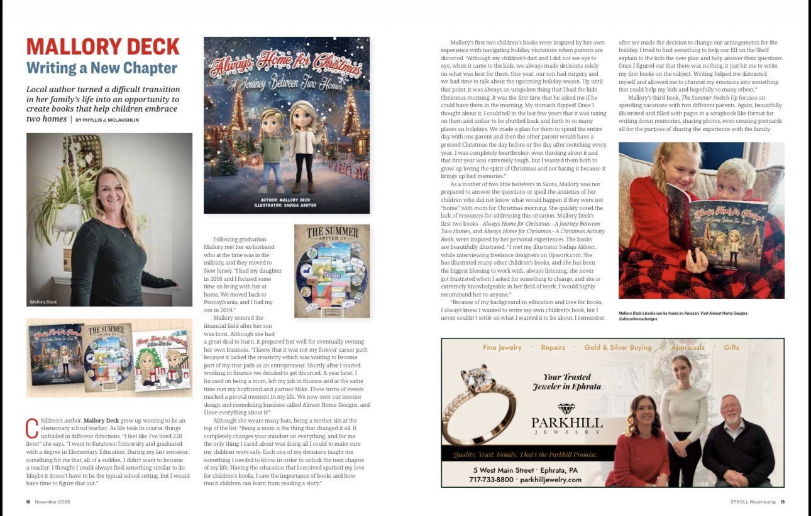

STROLL Wyomissing · November 2026 · Pages 18–19
Writing a
new chapter.
The local magazine feature introduces Mallory Deck and the family experiences behind her children’s books.
Open the full-size article ↗
STROLL Wyomissing · November 2026 · Pages 18–19
The local magazine feature introduces Mallory Deck and the family experiences behind her children’s books.
Open the full-size article ↗